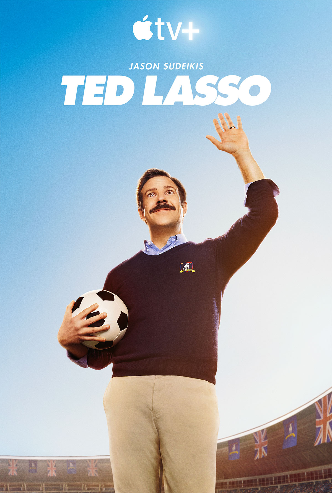
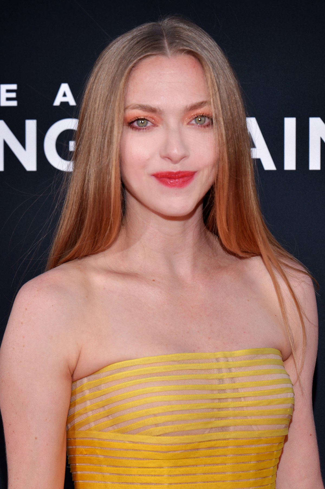

Ganhadores Do Emmy 2022

Série de drama
"Succession"

Série de comédia
"Ted Lasso"
Série limitada ou antologia
"The White Lotus"Ator em série de drama
Lee Jung-jae, "Round 6"Roteiro em série de drama
Jesse Armstrong - "Succession"Direção em série de comédia
MJ Delaney - "Ted Lasso"
Atriz de série de comédia
Jean Smart - "Hacks"
Atriz em série de drama
Zendaya - "Euphoria"
Direção em série de drama
Hwang Dong-hyuk - "Round 6"Roteiro em série de comédia
Quinta Brunson - "Abbott Elementary"
Ator de comédia
Jason Sudeikis - "Ted Lasso"
Roteiro de especial de variedades
"Jerrod Carmichael: Rothaniel"Roteiro em série limitada, antologia ou filme para TV
Mike White - "The White Lotus"Direção em série limitada, antologia ou filme para TV
Mike White - "The White Lotus"
Programa de competição
"Lizzo's Watch Out For the Big Girls"

Atriz de série limitada, antologia ou filme para TV
Amanda Seyfried - "The Dropout"Atriz coadjuvante de série limitada, antologia ou filme para TV
Jennifer Coolidge - "The White Lotus"
Talk show de variedades
"Last Week Tonight"
Série de esquetes
"Saturday Night Live"
Ator Coadjuvante em Série de Comédia
Brett Goldstein - "Ted Lasso"Atriz Coadjuvante em Série de Comédia
Sheryl Lee Ralph - "Abbott Elementary"
Atriz coadjuvante de série de drama
Julia Garner - "Ozark"
Ator coadjuvante de série de drama
Matthew Macfadyen - "Succession"
Ator coadjuvante de série limitada, antologia ou filme para TV
Murray Bartlett - "The White Lotus"